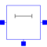

OLineLossy Transmission Line |

|
Information
This information is part of the Modelica Standard Library maintained by the Modelica Association.
Like in the picture below, the lossy transmission line OLine is a single-conductor lossy transmission line which consists of segments of lumped resistors and inductors in series and conductor and capacitors that are connected with the reference pin p3. The precision of the model depends on the number N of lumped segments.
To get a symmetric line model, the first resistor and inductor are cut into two parts (R1 and R_Nplus1, L1 and L_Nplus1). These two new resistors and inductors have the half of the resistance respectively inductance the original resistor respectively inductor.

The capacitances are calculated with: C=c*length/N.
The conductances are calculated with: G=g*length/N.
The resistances are calculated with : R=r*length/(N+1).
The inductances are calculated with : L=l*length/(N+1).
For all capacitors, conductors, resistors and inductors the values of each segment are the same except of the first and last resistor and inductor, that only have the half of the above calculated value of the rest.
The user has the possibility to enable a conditional heatport. If so, the OLine can be connected to a thermal network. When the parameter alpha is set to a value greater than zero, the OLine becomes temperature sensitive due to their resistors which resistances are calculated by R_actual = R*(1 + alpha*(heatPort.T - T_ref)) and conductors calculated by (G_actual = G/(1 + alpha*(heatPort.T - T_ref)).
Note, this is different to the lumped line model of SPICE.
References: [Johnson1991]
Parameters (11)
| r |
Value: Type: Real (Ω/m) Description: Resistance per meter |
|---|---|
| l |
Value: Type: Real (H/m) Description: Inductance per meter |
| g |
Value: Type: Real (S/m) Description: Conductance per meter |
| c |
Value: Type: Real (F/m) Description: Capacitance per meter |
| length |
Value: Type: Length (m) Description: Length of line |
| N |
Value: Type: Integer Description: Number of lumped segments |
| alpha_R |
Value: 0 Type: LinearTemperatureCoefficient (¹/K) Description: Temperature coefficient of resistance (R_actual = R*(1 + alpha*(heatPort.T - T_ref)) |
| alpha_G |
Value: 0 Type: LinearTemperatureCoefficient (¹/K) Description: Temperature coefficient of conductance (G_actual = G/(1 + alpha*(heatPort.T - T_ref)) |
| useHeatPort |
Value: false Type: Boolean Description: = true, if heatPort is enabled |
| T |
Value: 293.15 Type: Temperature (K) Description: Fixed device temperature if useHeatPort = false |
| T_ref |
Value: 300.15 Type: Temperature (K) Description: Reference temperature |
Connectors (4)
| p1 |
Type: Pin |
|
|---|---|---|
| p2 |
Type: Pin |
|
| p3 |
Type: Pin |
|
| heatPort |
Type: HeatPort_a |
Components (4)
| R |
Type: Resistor[N + 1] |
|
|---|---|---|
| L |
Type: Inductor[N + 1] |
|
| C |
Type: Capacitor[N] |
|
| G |
Type: Conductor[N] |